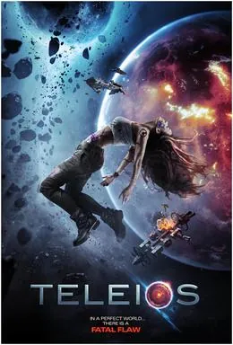

The genetics
Genetic engineering defines the crew. The Teleios is staffed by GCs, people genetically engineered to be physically stronger than ordinary humans and to keep their emotions under control, and the drama depends on that control breaking down when the crew is exposed to a mineral from Titan that drives them into madness. One reviewer saw in the film a story about social strata and the terrifying potential of gene tampering, while another found that it did little of interest with the GCs. No scientist appears and the engineering is never explained; it is part of the setting, but its failure under stress turns the crew into a danger to themselves. Emotional control cannot be engineered into people in any simple way, as many genes and the environment shape behaviour.
How genetics is portrayed
- Overall portrayal of genetics
- negative Engineered humans are shown as fragile and dangerous when their design fails, and a reviewer saw the film as being about the terrifying potential of gene tampering; no practitioner appears.
- Outcome of the genetic intervention
- negative The genetic engineering of the GC crew, done in the backstory, fails under exposure to the Titan mineral: their engineered emotional control breaks down and they descend into madness.
The story
In 2038 the Earth's atmosphere is polluted, and a mineral that could save it is being mined on Titan, a moon of Saturn. The mining ship Atromitos has been drifting with no news of its crew for two years, and the rescue ship Teleios is sent to investigate. Its crew is made up entirely of GCs, genetically engineered people who are physically superior to ordinary humans and keep their emotions under control. Aboard the Atromitos they find only one survivor, Travis O'Neill, who is traumatized and will speak only in quotations from classic books. As the psychologist Iris Duncan questions him, the crew begins to lose control: the mineral turns out to strip the GCs of their emotional restraint and drive them mad, and the story ends with the revelation of a killer android.